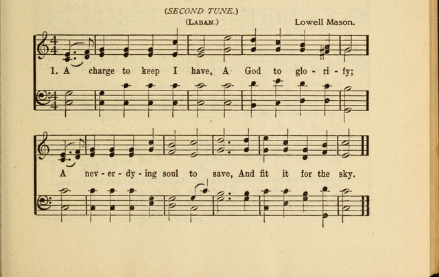
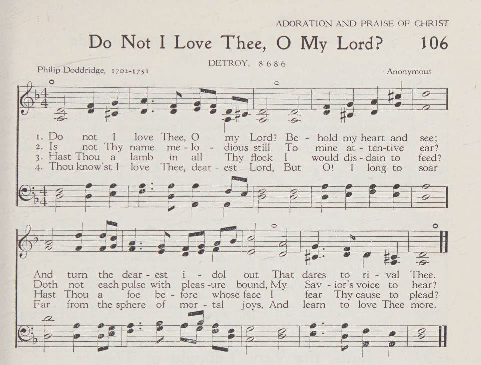
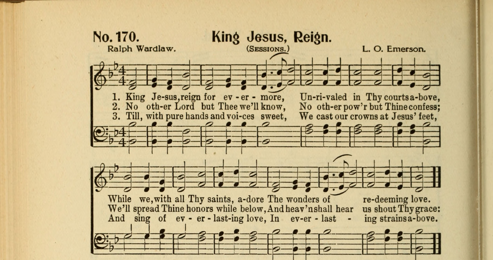
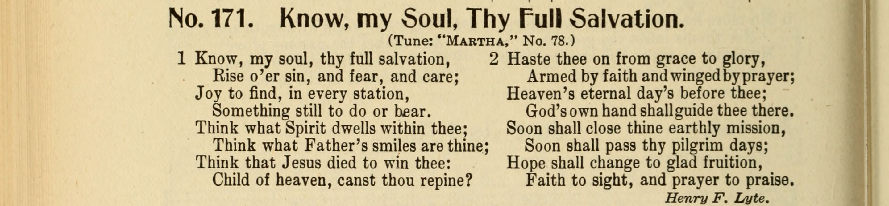
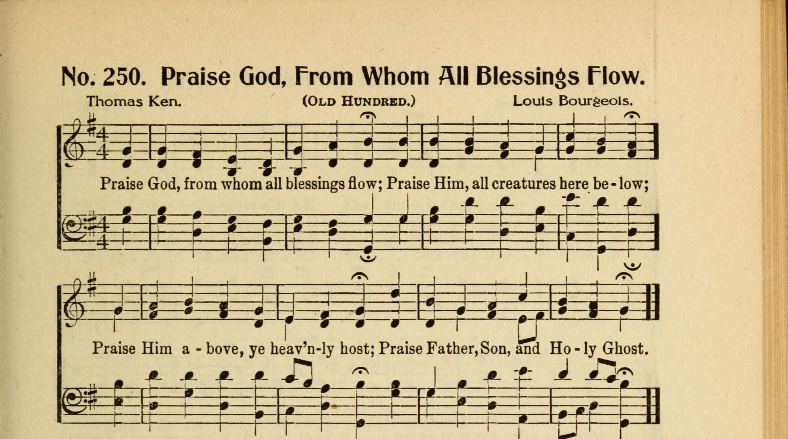
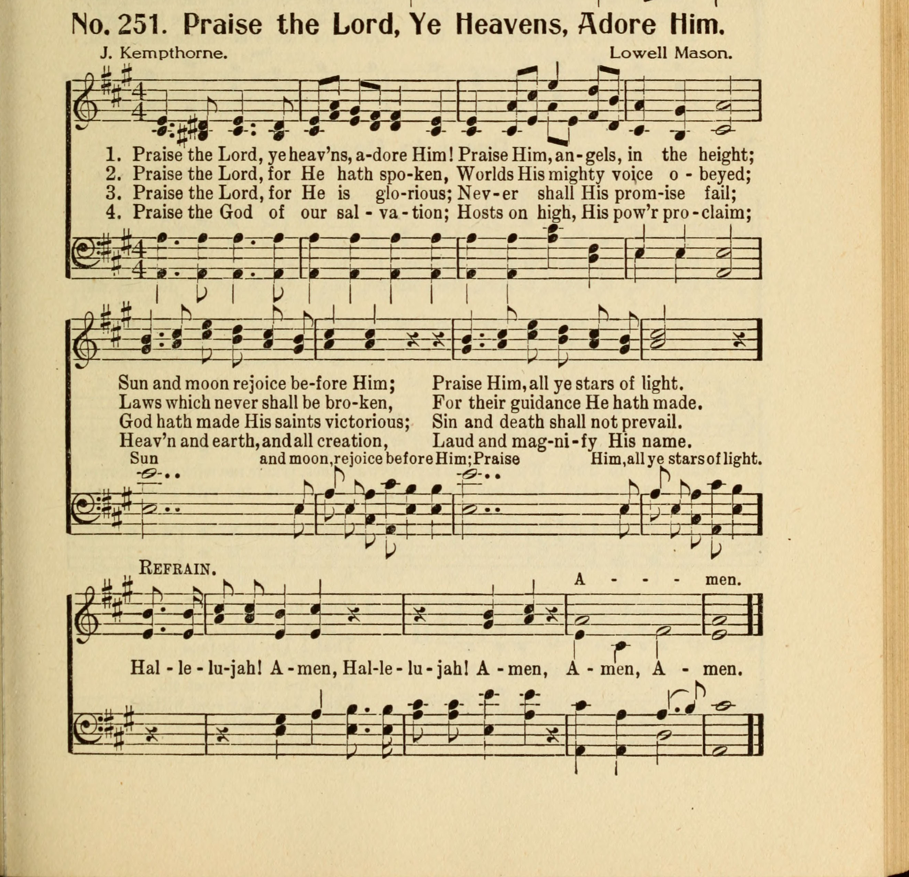
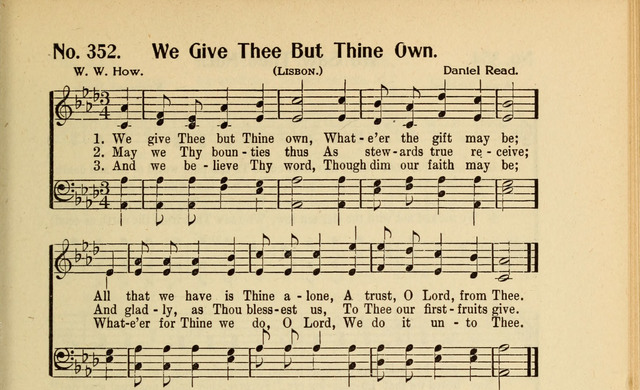
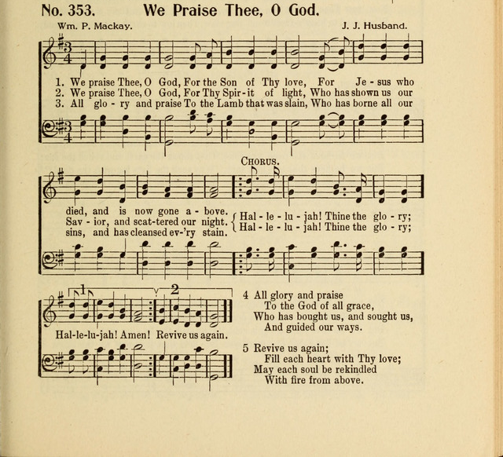

A Charge to Keep I Have (Boylston)
Score · 0006=1.jpg

Original pages are retained. Each sample is a lossless crop with provenance in manifest.json.
Score · 0006=1.jpg
Score · 0006=1.jpg

Score · 0120=117.jpg

Score · 0120=117.jpg

Score · 0123=118.jpg

Lyrics only — no notation on this page · 0123=118.jpg

Score · 0123=118.jpg

Score · 0174=169.jpg

Score · 0174=169.jpg

Score · 0246=241.jpg

Score · 0246=241.jpg

Score · swinglow.jpg